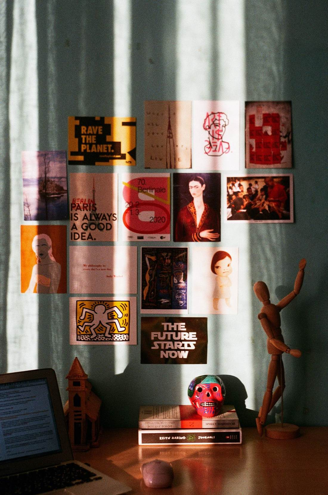
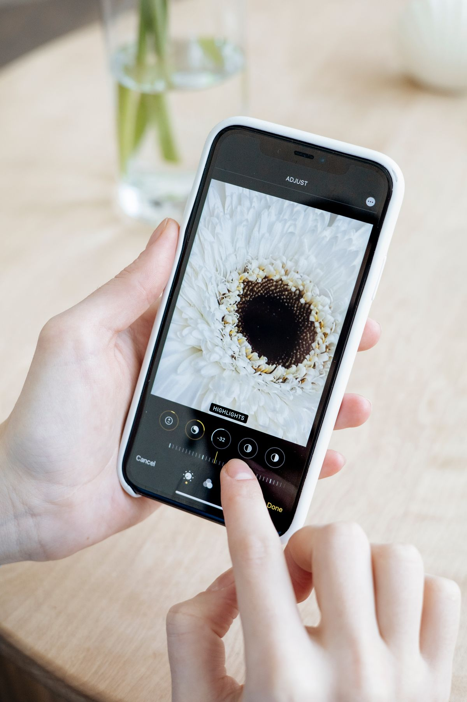

Ya, Adobe Express gratis dan bisa kamu pakai tanpa langganan. Per November 2026, Adobe menyediakan paket Free seharga 0 dolar Amerika yang bisa dipakai tanpa berlangganan dan tanpa biaya, menurut halaman bantuan resminya. Cukup daftar akun Adobe gratis, lalu langsung membuat poster, unggahan media sosial, video pendek, dan dokumen sederhana dari peramban atau HP.
Jawaban singkatnya begini. Adobe Express adalah aplikasi desain serba bisa untuk poster, unggahan media sosial, video pendek, logo sederhana, dan dokumen. Paket Free-nya bukan masa percobaan berbatas waktu. Kamu bisa memakainya terus, selama memakai fitur dan aset bertanda gratis. Isinya: lebih dari 100.000 templat statis dan video, lebih dari 4.000 fon dari koleksi Adobe Fonts, alat standar untuk mengedit foto, video, dan dokumen, serta lebih dari 1 juta foto, video, trek musik, dan elemen desain Adobe Stock bebas royalti. Penyimpanan awannya 5 GB dan riwayat versi tersimpan 10 hari. Kamu juga bisa menjadwalkan unggahan ke satu akun per jejaring sosial. Batas utamanya tiga: aset dan templat Premium bertanda khusus, fitur AI generatif punya jatah harian yang jumlahnya tidak dipublikasikan Adobe, dan penyimpanan 5 GB yang cepat penuh kalau kamu menyimpan banyak video. Kalau kebutuhanmu hanya desain sesekali, paket gratis ini sudah cukup.
Apa saja yang gratis di Adobe Express?
Nama Adobe sering diasosiasikan dengan langganan bulanan yang tidak murah, jadi wajar kalau banyak orang mengira semua produk Adobe berbayar. Adobe Express justru dibuat sebagai pintu masuk yang ringan: kamu tidak perlu memasang aplikasi berat seperti Photoshop atau Illustrator untuk satu poster pengumuman atau satu unggahan jualan.
Paket Free membuka editor lengkap untuk kebutuhan dasar: pilih templat poster, undangan, presentasi, kartu nama, atau unggahan media sosial, lalu ganti teks, warna, dan fotonya sesuai kebutuhanmu. Alat edit foto standarnya ada, misalnya potong gambar, tambah filter, atur kecerahan, dan tempel teks. Untuk video, kamu bisa memotong klip, menyusun adegan, dan menambah teks serta animasi sebelum mengunduh hasilnya. Semua ini berjalan di peramban, dan tersedia juga di Android, iPhone, dan iPad.
Yang paling berguna buat pemula adalah pustaka asetnya: kamu tidak harus berburu foto stok di tempat lain untuk satu poster sederhana. Tinggal cari, pasang, dan sesuaikan. Satu hal yang perlu kamu ingat, sebagian aset Stock bisa berubah dari gratis jadi berbayar tanpa pemberitahuan, jadi periksa tandanya dan pakai filter Free saat mencari.

Bagaimana cara mulai memakai Adobe Express gratis?
Mulainya tidak ribet dan tidak butuh kartu kredit. Ini langkahnya.
- Buka situs Adobe Express dan daftar. Buka situsnya di peramban HP atau laptopmu, lalu daftar atau masuk dengan akun Adobe gratis.
- Pilih jenis desain. Di halaman utama, ketik jenis desain yang kamu mau, misalnya "poster" atau "video pendek", lalu pilih ukuran dan templat yang kamu suka.
- Ganti teks dan warnanya. Ganti teks templat dengan kalimatmu sendiri, lalu atur warna dan fon supaya cocok dengan acara atau jualanmu.
- Ganti fotonya. Ganti foto templat dengan fotomu sendiri, atau cari foto gratis dari pustaka Adobe Stock dengan filter Free.
- Periksa lalu unduh. Periksa lagi ejaannya, lalu unduh hasilnya sebagai gambar atau video dan bagikan ke media sosialmu.
Untuk desain pertama, pilih templat yang paling sederhana. Templat yang ramai elemen memang menarik, tapi lebih lama diedit dan lebih gampang membuatmu memakai aset Premium tanpa sengaja. Sesudah satu desain selesai, kamu akan paham alurnya dan desain berikutnya jauh lebih cepat.
Kalau kamu bekerja dari HP, pasang aplikasinya dari toko aplikasi resmi. Alurnya sama, hanya layarnya lebih kecil. Untuk video pendek, layar laptop tetap lebih nyaman karena garis waktunya terlihat jelas. Simpan proyekmu di akun yang sama supaya bisa dilanjutkan di perangkat lain.

Apa yang tidak gratis di paket Free?
Paket Free memang nyata, tapi bukan berarti semua di Adobe Express terbuka. Tiga batas ini paling sering membuat orang kaget.
Pertama, templat dan aset Premium. Templat dan aset ini ditandai khusus. Kalau kamu telanjur memakai aset Premium, ganti dengan aset gratis atau berlangganan Premium sebelum mengunduh. Karena itu, periksa tanda Premium sebelum mengedit terlalu jauh.
Kedua, fitur AI generatif. Paket Free memberi jatah harian untuk fitur seperti membuat gambar dari teks dan menghapus objek. Adobe tidak memublikasikan jumlah pastinya, jadi jangan mengandalkannya untuk produksi dalam jumlah besar. Pegangan amannya: pakai AI untuk satu atau dua sentuhan per desain, bukan sebagai mesin utama.
Ketiga, penyimpanan dan riwayat versi. Paket Free memberi penyimpanan awan 5 GB dan riwayat versi 10 hari. Untuk desain sesekali, angka ini cukup, tapi untuk video 5 GB cepat habis karena satu berkas video bisa besar. Biasakan mengunduh hasil akhirmu dan menghapus proyek lama yang sudah tidak dipakai.
Kapan paket gratis ini cukup, dan kapan kamu perlu Premium?
Paket Free cukup kalau kebutuhanmu sesekali dan sederhana: tugas sekolah, poster acara RT, undangan, unggahan jualan, CV, dan video pendek untuk media sosial. Kamu tidak perlu membayar untuk hasil yang rapi di kebutuhan seperti itu.
Premium baru masuk akal kalau kamu mendesain hampir setiap hari dan selalu mentok di batas yang sama. Per November 2026, Premium tercatat seharga 9,99 dolar Amerika per bulan di harga Amerika Serikat, dengan penyimpanan 100 GB dan 250 kredit generatif per bulan, menurut halaman yang memeriksa harga Adobe. Ada juga uji coba gratis Premium selama 30 hari; kalau kamu mencobanya, ingat tanggal berakhirnya dan batalkan sebelum habis kalau kamu tidak mau ditagih.
Urutan yang benar: coba paket Free dulu sampai mentok, baru putuskan. Jangan membayar untuk fitur yang ternyata tidak pernah kamu sentuh.
Adobe Express memang gratis untuk kebutuhan desain sehari-hari, selama kamu memakai fitur dan aset bertanda gratis dan menerima batas penyimpanan serta jatah AI-nya. Per November 2026, paket Free ini masih jadi pintu masuk paling ringan ke dunia desain Adobe. Coba satu desain hari ini, dan biarkan hasilnya yang menentukan apakah kamu butuh Premium atau tidak.
Baca juga: Lihat semua artikel Other. Kalau kamu suka alat desain gratis, baca juga Figma ternyata gratis, Inkscape sebagai alternatif gratis Adobe Illustrator, dan Magic Eraser Google Foto yang ternyata gratis. Untuk bacaan yang lebih panjang, mampir ke artikel riset di blog.
Sumber dan Info Resmi
Langkah dan angka di artikel ini merujuk ke sumber berikut:
- Adobe Help: paket Free tanpa berlangganan dan tanpa biaya; 100.000+ templat, 4.000+ fon Adobe Fonts, alat standar edit foto, video, dan dokumen, jadwalkan unggahan ke 1 akun per jejaring sosial, 1 juta+ aset Adobe Stock bebas royalti, penyimpanan 5 GB, riwayat versi 10 hari, tersedia di web, iOS, Android, dan iPad; aset Stock kadang berubah dari gratis jadi berbayar, pakai filter Free saat mencari.
- Adobe Express: editor foto online gratis.
- Adobe Express: gratis dipakai, buat dan edit video dari peramban, tidak perlu kartu kredit.
- Krea: Free 0 dolar tanpa kartu pembayaran; Premium 9,99 dolar per bulan, 250 kredit generatif per bulan, penyimpanan 100 GB; Adobe tidak memublikasikan jumlah pasti generasi AI harian di paket Free.
- Lilach Bullock: Free tanpa kartu kredit; 100.000+ templat, 4.000+ fon, penyimpanan 5 GB, generasi AI harian gratis; Premium 9,99 dolar per bulan.
- Lilach Bullock: uji coba gratis Premium 30 hari, lalu Premium 9,99 dolar per bulan, batalkan sebelum berakhir supaya tidak ditagih.